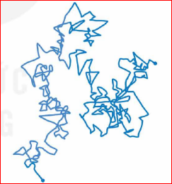
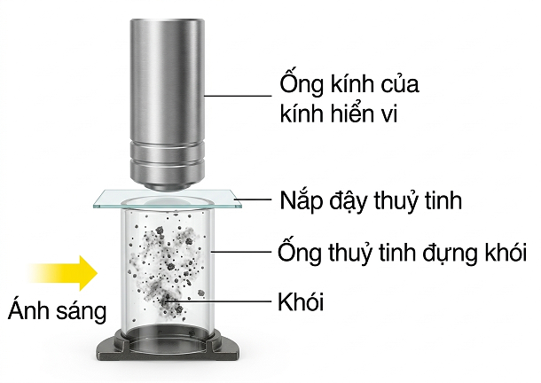
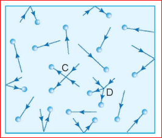

Khi học môn Khoa học tự nhiên ở lớp 6, các em đã biết một số tính chất đặc biệt của chất ở thể khí so với chất ở thể lỏng và thể rắn. Tại sao chất ở thể khí lại có một số tính chất vật lí khác chính chất đó ở các thể khác?
Chuyển động Brown không chỉ xảy ra trong chất lỏng mà xảy ra cả trong chất khí. Hình 8.1 vẽ sơ đồ thí nghiệm dùng để quan sát chuyển động Brown trong chất khí.

Hình 8.1. Sơ đồ thí nghiệm quan sát chuyển động Brown trong không khí
Hình 8.2. Quỹ đạo chuyển động của hạt khói trong không khí
Hình 8.3. Chuyển động và va chạm của các phân tử khí❓ 1. Dựa vào Hình 8.1, hãy mô tả thí nghiệm dùng để quan sát chuyển động Brown trong không khí.
❓ 2. Hãy dựa vào quỹ đạo chuyển động của hạt khói trong không khí (Hình 8.2) để chứng tỏ rằng các phân tử không khí chuyển động hỗn loạn, không ngừng.
❓ 3. Khi quan sát tia nắng mặt trời chiếu qua cửa sổ vào trong phòng, ta có thể thấy các hạt bụi trong ánh nắng chuyển động không ngừng. Chuyển động này có phải là chuyển động Brown không? Tại sao?
Không hoàn toàn hoàn toàn là chuyển động Brown thuần túy đối với các hạt bụi kích thước lớn (chúng chịu ảnh hưởng của các dòng đối lưu không khí và trọng lực).
Đối với các hạt bụi cực kỳ nhỏ (kích thước micromet), chuyển động quan sát được chính là chuyển động Brown do va chạm với các phân tử không khí.
Thí nghiệm mô tả ở Hình 8.1 còn cho thấy, khi tăng nhiệt độ của không khí trong ống thủy tinh chứa khói thì các hạt khói chuyển động nhanh hơn.
📌 KẾT LUẬN QUAN TRỌNG:
Trong khi chuyển động hỗn loạn, các phân tử khí không ngừng va chạm với nhau và với thành bình (Hình 8.3) nên tốc độ chuyển động của chúng không ngừng thay đổi. Do đó, tốc độ phân tử mà ta nói tới ở trên là tốc độ trung bình của các phân tử. Trong một khối khí có thể có các phân tử chuyển động nhanh hơn, bằng hoặc nhỏ hơn tốc độ trung bình. Người ta nói tốc độ chuyển động của phân tử có tính thống kê và chỉ có ý nghĩa khi có rất nhiều phân tử. Tốc độ này có độ lớn:
Ở điều kiện chuẩn (\(T = 273\text{ K } (0^\circ\text{C})\) và \(p = 1\text{ atm } (10^5\text{ Pa})\)), các phân tử khí oxygen chuyển động với tốc độ trung bình vào khoảng \(400\text{ m/s}\).
Giữa các phân tử khí cũng có lực đẩy và lực hút, gọi chung là lực liên kết. Khoảng cách giữa các phân tử ở thể khí rất lớn so với ở thể lỏng và thể rắn nên lực liên kết giữa các phân tử ở thể khí rất yếu so với ở thể lỏng và thể rắn.
❓ 1. Hãy nêu các hiện tượng thực tế chứng tỏ lực liên kết giữa các phân tử ở thể khí rất yếu so với ở thể lỏng và thể rắn.
❓ 2. Hãy dựa vào khối lượng riêng ở cùng điều kiện nhiệt độ và áp suất của cùng một chất ở các thể khác nhau để chứng tỏ khoảng cách giữa các phân tử ở thể khí rất lớn so với ở thể lỏng và thể rắn.
Ví dụ đối với nước ở \(0^\circ\text{C}, 1\text{ atm}\): Khối lượng riêng của nước đá là \(\approx 917\text{ kg/m}^3\), nước lỏng là \(\approx 1000\text{ kg/m}^3\), trong khi hơi nước chỉ khoảng \(0,598\text{ kg/m}^3\).
Vì khối lượng riêng của thể khí nhỏ hơn rất nhiều lần (khoảng vài nghìn lần) so với thể rắn và lỏng, cùng một số lượng phân tử nhưng thể tích thể khí chiếm chỗ lớn hơn rất nhiều \(\Rightarrow\) Khoảng cách trung bình giữa các phân tử thể khí lớn hơn rất nhiều so với thể lỏng và rắn.
Từ các thí nghiệm và thực tế, người ta đưa ra mô hình động học phân tử chất khí:
⚙️ CÁC NỘI DUNG CHÍNH CỦA MÔ HÌNH:
Hãy điền vào các ô còn trống trong Bảng 8.1:
Bảng 8.1. Bảng các thí nghiệm và hiện tượng thực tế làm cơ sở cho việc đưa ra mô hình động học phân tử chất khí
| STT | Mô hình động học phân tử chất khí | Các thí nghiệm và hiện tượng thực tế |
|---|---|---|
| 1 | Phân tử khí chuyển động hỗn loạn, không ngừng. | Chuyển động Brown trong không khí. |
| 2 | Kích thước của các phân tử khí rất nhỏ so với khoảng cách giữa chúng. | [Khối lượng riêng thể khí rất nhỏ so với thể lỏng; Khí dễ nén, dễ lan tỏa chiếm toàn bộ thể tích bình chứa] |
| 3 | Khi chuyển động các phân tử khí va chạm với nhau và với thành bình. | [Hiện tượng bóng bay/lốp xe bơm căng tác dụng áp suất lên vỏ; Sự khuyếch tán khí trong không gian] |
Để tìm hiểu các tính chất của chất khí, người ta dùng một mô hình khí đơn giản hơn khí thực (khí tồn tại trong thực tế) nhưng vẫn phản ánh được các đặc điểm cơ bản của khí này:
💡 ĐẶC ĐIỂM CỦA KHÍ LÍ TƯỞNG:
Mô hình trên bỏ qua thể tích của phân tử khí, bỏ qua tương tác của các phân tử khi chưa va chạm và coi va chạm là hoàn toàn đàn hồi làm cho việc mô tả các hiện tượng về chất khí trở nên đơn giản, dễ dàng. Chất khí trong mô hình trên được gọi là khí lí tưởng.
🖐️ HOẠT ĐỘNG / NÊU VẤN ĐỀ:
Hãy dùng mô hình động học phân tử chất khí để chứng tỏ với một khối lượng khí xác định thì nếu giảm thể tích của bình chứa và giữ nguyên nhiệt độ khí thì áp suất của khí tác dụng lên thành bình tăng. Hãy tìm ví dụ trong thực tế để minh họa cho tính chất trên của chất khí.
Giải thích:
Ví dụ thực tế: Dùng tay nén pittông của bơm xe đạp khi bít kín đầu ra; khi ấn sâu pít-tông xuống, cảm giác tay bị đẩy lại càng mạnh do áp suất khí trong xi-lanh tăng lên.
Dùng thuyết động học phân tử chất khí để giải thích được các hiện tượng có liên quan. Ví dụ: chất khí luôn chiếm toàn bộ dung tích của bình chứa; chất khí gây áp suất lên thành bình theo mọi hướng; sự phụ thuộc áp suất của một lượng khí xác định tác dụng lên thành bình vào thể tích và nhiệt độ,...
Chinh phục 10 câu hỏi củng cố kiến thức về Mô hình động học phân tử chất khí!
Câu 1: Chuyển động Brown trong chất khí chứng tỏ điều gì?
Câu 2: Khi nhiệt độ của khối khí tăng thì:
Câu 3: Nguyên nhân gây ra áp suất của chất khí lên thành bình là do:
Câu 4: So với thể lỏng và thể rắn, lực liên kết giữa các phân tử ở thể khí:
Câu 5: Trong mô hình khí lí tưởng, các phân tử khí được coi là:
Câu 6: Va chạm giữa các phân tử khí trong mô hình khí lý tưởng là:
Câu 7: Tốc độ trung bình của phân tử khí oxygen ở điều kiện chuẩn khoảng:
Câu 8: Lí do chính khiến khí thực khác khí lí tưởng là gì?
Câu 9: Khi giảm thể tích của bình chứa khí và giữ nguyên nhiệt độ, áp suất khí tăng là do:
Câu 10: Tốc độ chuyển động của các phân tử khí mang tính chất gì?
Bài 1:
Một khối khí chứa 5 phân tử có tốc độ lần lượt là \(v_1 = 300\text{ m/s}\), \(v_2 = 350\text{ m/s}\), \(v_3 = 400\text{ m/s}\), \(v_4 = 450\text{ m/s}\), \(v_5 = 500\text{ m/s}\). Hãy tính tốc độ trung bình \(\overline{v}\) của các phân tử khí này.
Lời giải:
Áp dụng công thức tính tốc độ trung bình của phân tử khí:
\[ \overline{v} = \frac{v_1 + v_2 + v_3 + v_4 + v_5}{n} \]
Thay số:
\[ \overline{v} = \frac{300 + 350 + 400 + 450 + 500}{5} = \frac{2000}{5} = 400\text{ (m/s)} \]
Đáp số: \(400\text{ m/s}\).
Bài 2:
Ở nhiệt độ phòng \(27^\circ\text{C}\) (\(300\text{ K}\)), bình chứa khí Helium có dung tích \(10\text{ lít}\) dưới áp suất \(2\text{ atm}\). Tính số phân tử khí Helium chứa trong bình. Cho biết số Avogadro \(N_A = 6,022 \times 10^{23}\text{ mol}^{-1}\) và hằng số khí \(R = 0,0821\text{ L}\cdot\text{atm/(mol}\cdot\text{K)}\).
Lời giải:
Áp dụng phương trình trạng thái khí lí tưởng: \(p \cdot V = n \cdot R \cdot T\)
Số mol khí Helium trong bình là:
\[ n = \frac{p \cdot V}{R \cdot T} = \frac{2 \times 10}{0,0821 \times 300} \approx 0,812\text{ (mol)} \]
Số phân tử khí Helium trong bình là:
\[ N = n \times N_A = 0,812 \times 6,022 \times 10^{23} \approx 4,89 \times 10^{23}\text{ (phân tử)} \]
Đáp số: \(\approx 4,89 \times 10^{23}\) phân tử.
Bài 3:
Một khối khí lí tưởng xác định có thể tích \(6\text{ lít}\) ở áp suất \(1\text{ atm}\). Giữ cho nhiệt độ không đổi, nén khối khí này làm thể tích giảm xuống còn \(2\text{ lít}\). Tính áp suất của khối khí sau khi nén và giải thích sự thay đổi áp suất bằng mô hình động học phân tử.
Lời giải:
1. Tính toán áp suất:
Do nhiệt độ không đổi, áp dụng định luật Boyle-Mariotte: \(p_1 \cdot V_1 = p_2 \cdot V_2\)
Suy ra áp suất lúc sau:
\[ p_2 = \frac{p_1 \cdot V_1}{V_2} = \frac{1 \times 6}{2} = 3\text{ (atm)} \]
2. Giải thích theo mô hình động học phân tử:
Khi thể tích giảm 3 lần (\(6\text{ lít} \rightarrow 2\text{ lít}\)) trong khi nhiệt độ không đổi (tốc độ chuyển động trung bình không đổi), mật độ phân tử khí tăng lên 3 lần. Do đó, số va chạm của các phân tử khí vào thành bình trong một đơn vị thời gian tăng gấp 3 lần, làm áp suất khí tác dụng lên thành bình tăng lên 3 lần (\(3\text{ atm}\)).